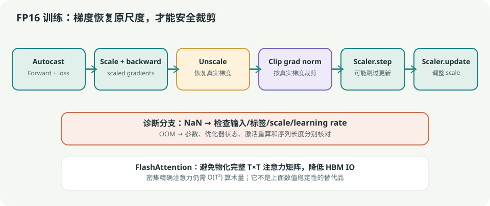

1. NaN、OOM 与训练缓慢不是同一种故障
设你正在微调一个包含数百兆参数的 Encoder。第一轮开始时损失正常，但若某个 step 后梯度全是 inf 或 nan，后续优化器状态可能被污染。另一种场景是显存 OOM，此时损失甚至尚未计算。第三种场景是训练可继续，只是 GPU 花大量时间在显存搬运上。三者要按不同链路诊断。

在动参数前先记录异常发生的 batch ID、输入 token 数、loss 组成、优化器步数、学习率、grad norm、AMP scale 和 GPU 显存。检查输入 input_ids 是否越界、所有标签是否被 ignore、attention mask 是否错误覆盖 padding，以及是否有被全屏蔽的 query 行。
2. FP32、FP16 与 BF16：位数相同不代表数值范围相同
| 格式 | 指数位 | 尾数位（不计隐含位） | 训练相关性质 |
|---|---|---|---|
| FP32 | 8 | 23 | 范围与精度较高，通常耗用更多激活显存与带宽 |
| FP16 | 5 | 10 | 较小指数范围，容易在很小梯度或很大激活时下溢/上溢 |
| BF16 | 8 | 7 | 指数范围接近 FP32，但有效精度更低 |
常说“混合精度训练用低精度做全部前向，再保存 FP32 主权重”是一种简化，不能覆盖所有实现。PyTorch torch.autocast 按算子选择 dtype；某些归约和数值敏感算子仍可能执行于 FP32，参数与优化器状态是否 FP32 依具体实现而定。
对支持 BF16 的硬件，BF16 往往能减少 FP16 的指数范围问题，通常无需 GradScaler；但 BF16 并不自动解决坏数据、过大学习率或软件错误。对 FP16，loss scaling 通过放大反传梯度减少下溢，并在更新前恢复原尺度。
3. AMP 与梯度裁剪：顺序错误会改变更新方向
若标量损失为 L、放大比例为 s，反向传播得到的是 s∇L。此时直接裁剪 clip_grad_norm_，会按放大后的范数判断阈值，等价于意外把裁剪上限缩小了 s 倍。正确顺序是：autocast 前向 → scale(loss).backward → scaler.unscale_(optimizer) → clip → scaler.step → scaler.update。
# PyTorch 2.x / CUDA FP16 训练循环骨架（不是完整预训练）
import torch
from torch.nn.utils import clip_grad_norm_
model.train()
scaler = torch.amp.GradScaler("cuda")
for batch in loader:
optimizer.zero_grad(set_to_none=True)
with torch.autocast(device_type="cuda", dtype=torch.float16):
loss = model(**batch).loss
if not torch.isfinite(loss):
raise ValueError("Non-finite loss: inspect batch and labels")
scaler.scale(loss).backward()
scaler.unscale_(optimizer) # 必须在裁剪之前
grad_norm = clip_grad_norm_(model.parameters(), 1.0)
if not torch.isfinite(grad_norm):
raise ValueError("Non-finite grad norm")
scaler.step(optimizer) # 若检测到 inf/NaN，可跳过本次 optimizer.step
scaler.update()上面是便于检查步骤顺序的示意。生产工程中还应处理 resume/checkpoint、学习率 scheduler、分布式训练、梯度累积和不同参数组。不要只根据代码里存在 GradScaler 就断言真实运行没有溢出：必须记录实际 scale、skip 次数与 loss。
4. 梯度累积：扩大有效 batch，不是把更新频率保持不变
若每设备 micro-batch 为 b、GPU 数为 n、累积次数为 a，有效 batch 为 b×n×a；每收集 a 个 micro-batch 才做一次 optimizer.step。为近似求平均梯度，通常将每个 micro-batch 的 loss 除以 a，再反传。
不完整的最后一个累积窗口、不同 micro-batch 的 token 数不一致、token-level loss 的不同归一化方式，以及 dropout/BatchNorm 等状态行为都可能使它与一次大 batch 训练不严格相同。对于 token loss，应按有效监督 token 数加权，而不是假设每个 micro-batch 的 token 数相等。
使用 FP16 + GradScaler + accumulation 时，不应在每个 micro-batch 调用 unscale_；应在累积完成后统一 unscale、裁剪、更新。Scheduler 也按实际执行的优化器更新次数前进；若 scaler 跳过 step，还要避免 scheduler 与 optimizer 脱节。
5. 训练显存账本：权重、梯度、优化器状态、激活
以 AdamW FP32 参数和两个 FP32 动量状态为粗略例子，单个参数在训练中可能占参数 4B、梯度 4B、m 4B、v 4B，合计约 16 bytes/parameter，不含激活、临时 kernel workspace、模型副本、分布式分片等。真实混合精度实现可能维护额外权重副本，因此不能将 16B/param 当作通用精确上限。
激活显存与 batch、序列长度、层数和保存的中间张量有关。激活重计算（gradient checkpointing）不保存全部中间激活，而是在反传时重算一部分前向，交换更多计算以节省显存；它不会减少模型参数量。Zero Redundancy Optimizer / FSDP 等分片技术则在设备之间拆分 optimizer states、梯度或参数，目标不同。
从 512 增长到 1024 token，标准注意力分数矩阵的元素数增长 4 倍；若实际瓶颈来自 attention score 的物化和 HBM 访问，IO-aware kernel 可带来显存或速度收益。但如果瓶颈来自巨大的 embedding/FFN 激活、数据加载或跨卡通信，替换 attention kernel 可能不是主要解法。
6. FlashAttention：减少数据搬运，而不是把精确注意力改成 O(T)
标准全注意力计算 QKᵀ，沿 key 位置 softmax，再乘 V。直接实现常会物化一个 T×T 分数/概率矩阵。FlashAttention 的关键是把 Q/K/V 分块，从 HBM 把块搬进更快的片上 SRAM，在分块计算中维护稳定的在线 softmax 统计，而不必把完整注意力矩阵存回 HBM。
因此它属于精确注意力的 IO-aware 实现：在相同数学注意力目标与合理数值误差范围内，减少 HBM 读写与中间张量物化。对长度 T 的密集全注意力，QKᵀ 的算术计算规模仍随 T² 增长。局部窗口或稀疏注意力可以改变连接图与算术量，但那是另一类算法选择。
PyTorch 的 scaled_dot_product_attention 会在符合条件时选择可用的后端，但并非所有 mask、dtype、设备组合都会调用相同实现。需要用 profiler 和实际 GPU benchmark 确认使用的 kernel，并检查 forward/backward 与未优化参考实现的数值误差。
7. 一份可靠的数值验收清单
- 固定一个 2–4 条样本的 tiny batch，在 FP32 下检查 loss、logits shape、标签 ignore index 与 attention mask。
- 在同一 batch 上对比 FP32 与 FP16/BF16 前向误差、loss 范围、非有限值比例；设置合理的相对/绝对误差容忍度。
- 记录每步 grad norm、学习率、GradScaler scale、skip 数、optimizer state 是否包含 NaN。
- 在 checkpoint resume 后比较 token 计数、step 数、scheduler 状态与随机状态，避免隐蔽的训练重置。
- 分别测量 tokens/s、峰值显存和端到端 step time；不要只看 attention kernel 的 isolated microbenchmark。
对于分布式训练，至少对一个短周期实验检查不同 rank 的参数同步、有效 batch 和数据采样是否正确；在故障批次重现之前，不要靠随机改变五个超参数“修复”不可解释的 NaN。
8. 交互：根据症状选择第一个诊断点
训练故障分流
这是诊断顺序示例，不是自动修复或真实 GPU 性能测量。
先复现具体 batch，记录 loss 与 grad norm；排查标签、mask 和非有限输入，再检查学习率与 FP16 scale。不要把所有 NaN 先归结为“学习率太大”。
9. 交互二：精度、显存与 loss scaling 账本
三个状态演示参数状态字节、注意力矩阵随长度的平方增长、以及 FP16 loss scaling 如何把很小的梯度放大到可表示范围。数值均为教学数量级示意，不代表实测峰值显存或某设备的实测值。
bytes / T² / scale
固定教学数字，切换状态查看算术来源。
110M 参数 × 16 B（参数 4 + 梯度 4 + m 4 + v 4）= 1.76e9 B ≈ 1.76 GB。 不含激活、临时 workspace、模型副本与分片。 混合精度实现可能另有权重副本，因此 16 B/param 不是通用精确上限。
上述算术在 examples/encoder_budget_lab.py 的 param_memory_bytes、attention_matrix_elements 与 scaled_gradient 中实现，并由对应单测断言。
关键结论
- FP16 与 BF16 都是 16-bit，但指数位数不同；AMP 的算子 dtype 与优化器状态需按实现确认。
- FP16 loss scaling 需要在梯度裁剪前 unscale；梯度累积与 scheduler 都按真实 optimizer step 管理。
- 激活重计算、分布式分片与 FlashAttention 分别针对不同的显存或计算瓶颈。
- FlashAttention 是精确密集注意力的 IO 优化，不等于 O(T) 的全注意力算法。
原始资料与实现文档
- Dao et al., FlashAttention, §2–3（IO-aware exact attention 与 online softmax）。
- PyTorch, Automatic Mixed Precision examples（梯度 unscale、裁剪与累积顺序）。
- PyTorch, scaled_dot_product_attention（可用后端与 mask 语义）。
- Chen et al., Training Deep Nets with Sublinear Memory Cost（激活重计算的早期方法）。